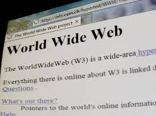
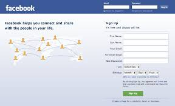

السلسلة التاريخية والتطور
بدايات HTML
أول موقع إلكتروني أنشأه تيم برنرز لي في CERN. صفحات بسيطة تحتوي على نصوص وروابط فقط، دون أي تنسيق بصري.

عصر الجداول
استخدام الجداول (HTML Tables) لتنظيم المحتوى وإنشاء تخطيطات أكثر تعقيدًا، رغم صعوبة صيانتها.
صعود Flash
ظهور Adobe Flash الذي أحدث ثورة في تصميم الويب التفاعلي مع الرسوم المتحركة والصوت والفيديو.
عصر Web 2.0
تحول المواقع إلى منصات تفاعلية اجتماعية مع ظهور Facebook وYouTube واهتمام متزايد بتجربة المستخدم.

التصميم المتجاوب
ظهور مفهوم التصميم المتجاوب (Responsive Web Design) مع Ethan Marcotte لمواكبة تعدد أحجام الشاشات.